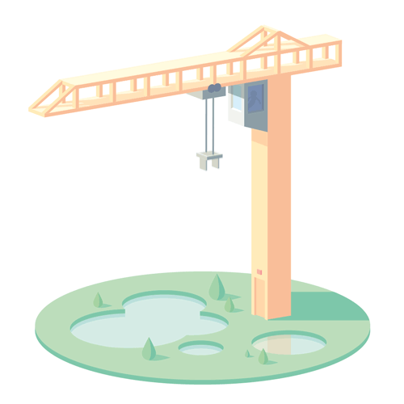

<mat-sidenav-container>
    <mat-sidenav opened="true" mode="side">
        <div class="function_bar">
            <div class="function_bar_box">
                <!-- https://stackoverflow.com/questions/35639174/passive-link-in-angular-2-a-href-equivalent -->
                <h1>Management</h1>
                <a routerLink="/Home/Management">
                    <h3>Posts</h3>
                </a>
                <a routerLink="/Home/Publish">
                    <h3>Publish</h3>
                </a>
            </div>
            <div class="function_bar_box">
                <h1>Stats</h1>
                <a routerLink="/Home">
                    <h3> ̶U̶n̶d̶e̶r̶ ̶c̶o̶n̶s̶t̶r̶u̶c̶t̶i̶o̶n̶</h3>
                </a>
            </div>
            <div class="function_bar_box">
                <h1>Help</h1>
                <a routerLink="/Home">
                    <h3> ̶U̶n̶d̶e̶r̶ ̶c̶o̶n̶s̶t̶r̶u̶c̶t̶i̶o̶n̶</h3>
                </a>
            </div>
        </div>
    </mat-sidenav>

    <mat-sidenav-content>
        <router-outlet></router-outlet>
        <div class="PAGE404">
            <div class="box">
                
                <marquee>If you see this screen, It means the page is under construction ...</marquee>
            </div>
        </div>
    </mat-sidenav-content>
</mat-sidenav-container>
